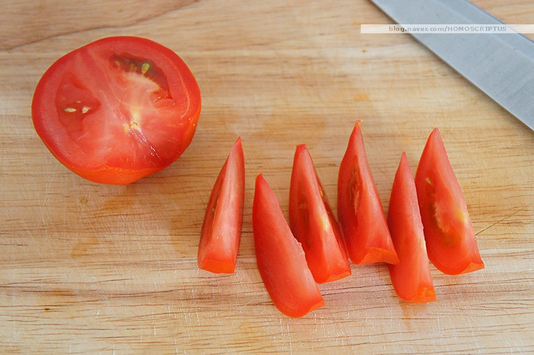
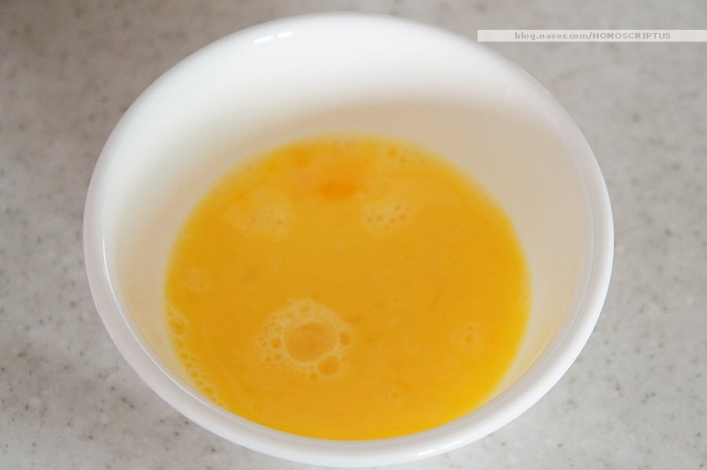
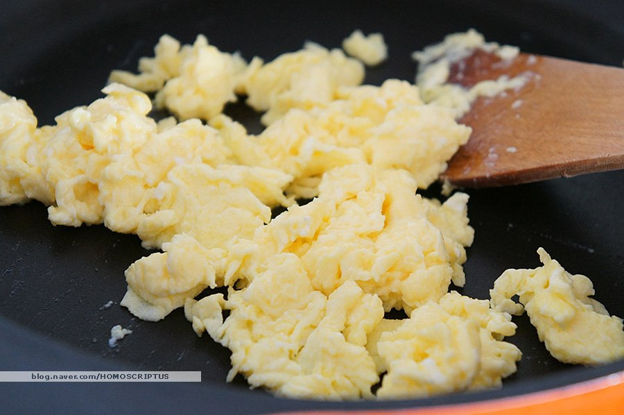
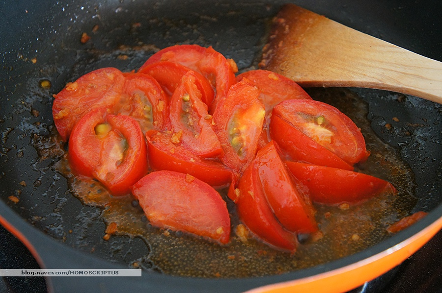
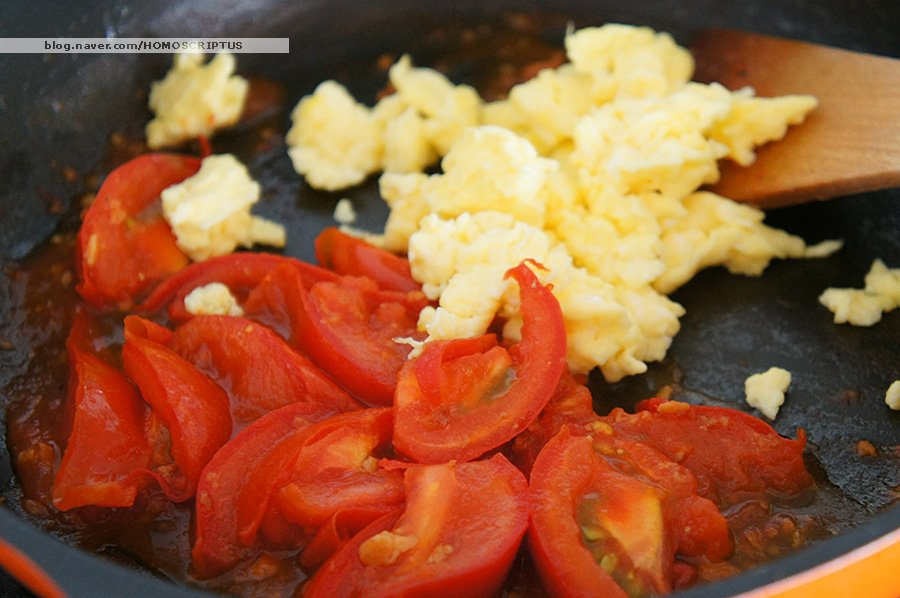

Chinese Food


재료 리스트
토마토 2개 | 계란 2개 | 대파 약간 | 식용유 | 다진마늘 1/2스푼 | 청주 1스푼 | 설탕 1/2스푼 | 소금 약간 | 후추 약간 | 참기름
레시피
1. 토마토는 1개당 8~12등분 정도로 잘라서 준비해주세요.

2. 계란을 풀어 청주 1스푼과 소금 2꼬집 정도를 넣고 섞어주세요.

3. 준비된 팬에 식용유를 넉넉히 두르고 계란물을 넣어 스크램블을 만들어주세요.

4. 만들어진 스크램블을 옮겨 놓은 뒤 다진 마늘과 토마토를 넣고 볶다 물 조금과 설탕 2스푼을 넣고 볶아주세요.
그 뒤 소금과 후추로 기호에 맞게 간을 맞춰주세요.

5. 옮겨 놓은 스크램블을 토마토와 함께 볶아주세요.

토마토 달걀 볶음 완성 !!